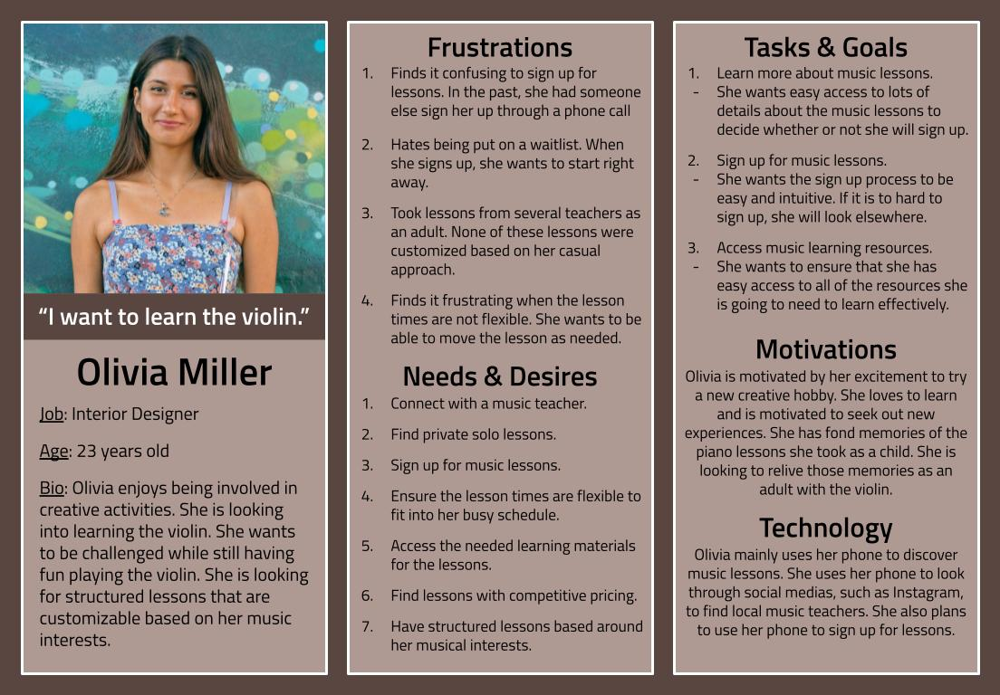
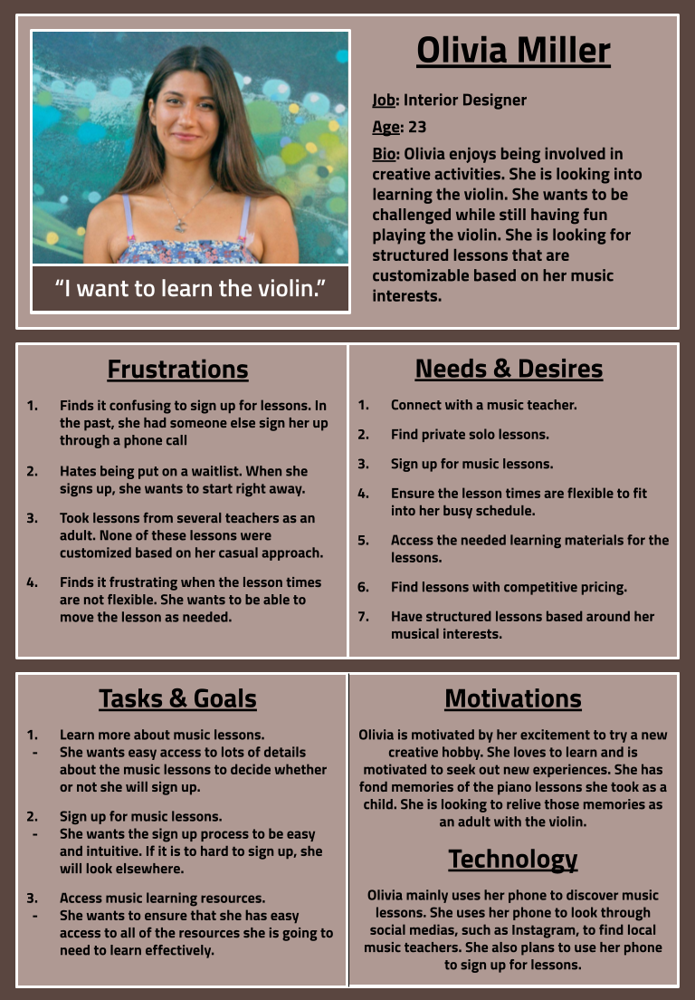

Project Overview
The purpose of Aland Accelerando is to connect students with many different music teachers in one place. It allows students to pick an instrument, location, and lesson style to find a teacher that fits their specifications. There was also music resources based around the lesson styles. The completed project is a Figma prototype.
Problem Statement
It can be challenging to find music teachers as there is not a standardized way to locate reputable music teachers. Some teachers will not stay focused for their lesson or will reschedule lessons constantly. Taking lessons from ineffective teachers wastes students’ time, energy, and money. This will also cause a lack of knowledge of instrument playing techniques. Without the ability to find effective teachers, people will have a far more difficult time learning to play an instrument.
User Interviews
Before creating a wireframe, I conducted user interviews to discover the needs of my user base. Based on this, I created the persona “Olivia Miller”. I learned from my interviews that my user base was looking for music lessons that are structured, but customizable. They want control over what music they are playing. However, they want the teacher to give them guidance and suggestions.
I created the following lesson packages based on my user interview findings: Casual, focused, and professional. All of the packages are suitable for beginners. However, the pacing, content, and recitals are different for each package. This approach allowed for customization while providing a clear structure to the lessons.

